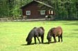
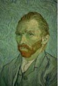
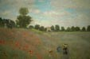

Mis Fotos Preferidas
[Animales]
,
[Cuadros]
,
[Plantas]
Fotos de animales
A continuación un grupo de fotos de animales.

Volver a inicio
Cuadros
Cuadros que me gustan.
 
Volver a inicio
Plantas
Las fotos de plantas atractivas.
Volver a inicio
 Volver a inicio
Volver a inicio